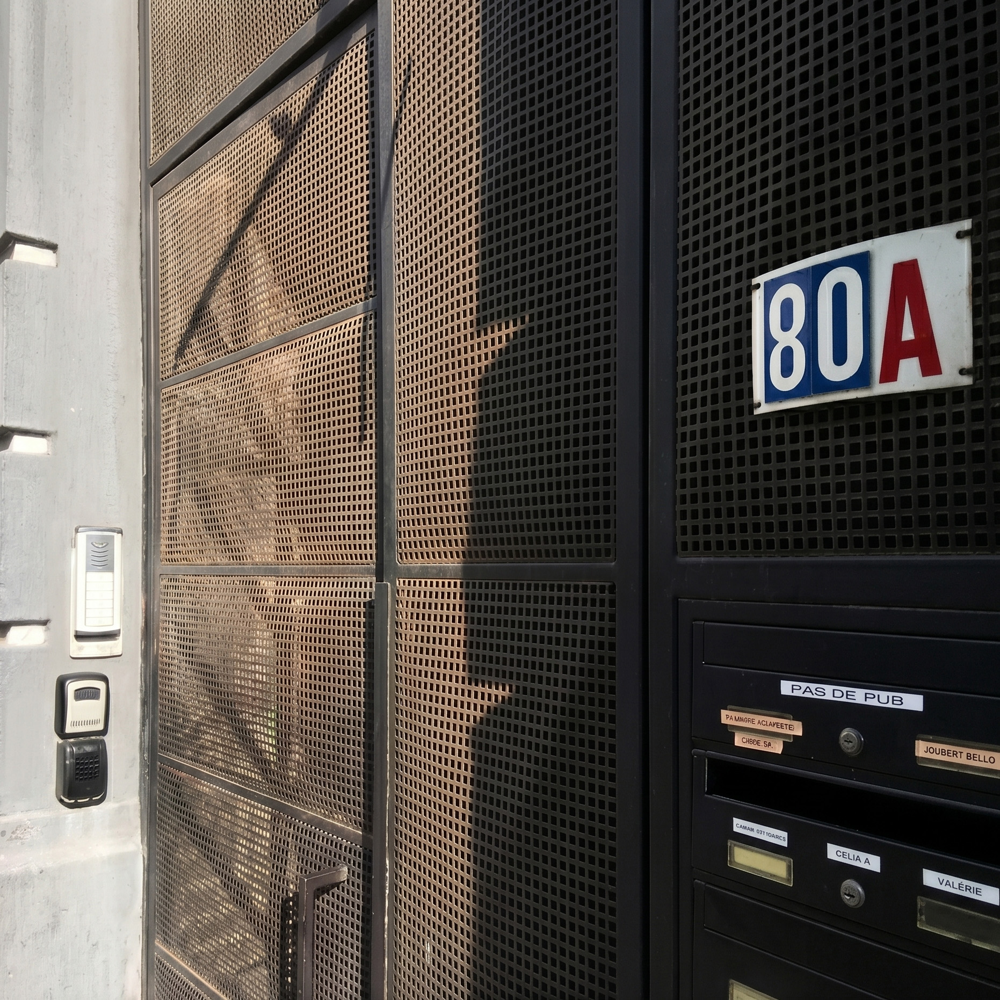
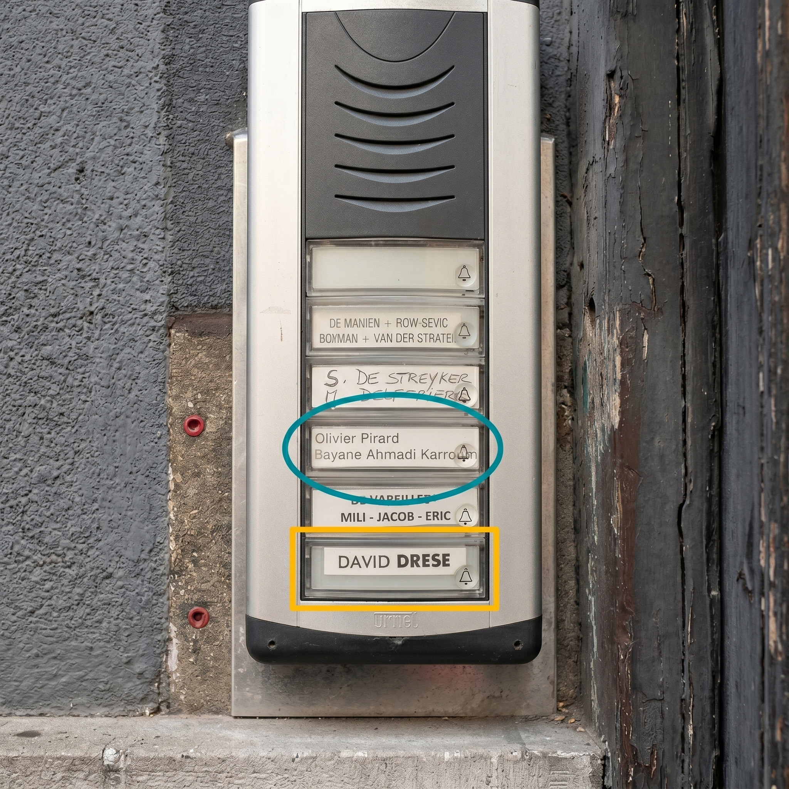
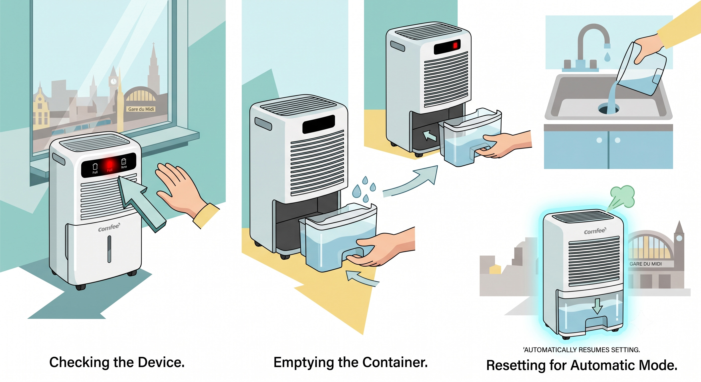

Fast & Free Wi-Fi
Network: Petibon
Password: Petibon1987!
🗺️
Getting Inside (Check-In)
▼
You have reached the destination at number 80A.

If I am around, ring the buzzer circled in blue (Olivier Pirard / Bayane). Otherwise, the flat buzzer is in yellow (DAVID DRESE).

If I am not meeting you, find your keys in the secure safebox on the wall. Code: 5291.

Pass through the main street gate, enter the courtyard area, and follow the direction of the arrow.

Head right down the short steps to reach your private entrance. The door might already be unlocked when you arrive.

📜
House Rules
▼
- Strictly no smoking inside the flat.
- If smoking outside, please ensure the flat doors are closed so smoke and smells do not enter.
- Please keep noise to a minimum, especially outside in the courtyard after 10 PM, for the neighbours.
- Remember to lock the main black gate at street level with the key after 8 PM.
🌡️
Heating & Thermostat
▼
You have full access to the thermostat to adjust the heating. It is usually set between 18.5°C and 19°C upon arrival.
How to change the temperature:
- Confirm that "man" is displayed on the screen.
- Rotate the center wheel dial to your desired temperature.
- Press the center wheel inward to confirm.

🔒
How to Close & Lock the Door
▼
To properly close the main glass sliding door before locking it:
- First, pull the handle entirely down and slide the door shut.
- Then, lift the handle completely back up while continuing to pull the door towards you.
- You should hear a light "clic". This means the door is sealed and properly closed.
Once you hear the click, feel free to lock it securely with the key.

💧
Dehumidifier Control
▼
The Comfee dehumidifier automatically runs to optimize moisture levels. If the fan noise disturbs you, feel free to turn it off; it saves its settings when powered back on.
To empty it: Pull the container out from the bottom, empty the water in the sink, and slide it firmly back into place.

🗑️
Sorting the Bins
▼
Please sort waste carefully using the colored bins:
Yellow Bin: Paper and cardboard.
Blue Bin: Plastics, metal packaging, and tetrapack cartons.
White Bin: General trash / Residual waste.
Glass (Black Basket): Clean empty glass bottles and jars.
🚨 When Bins Are Full: Tie the bag closed and place it by the flat entrance. We need to take them to street level on specific collection days.
➕ Extra bin bags are located in the drawer directly above the bins.
🍽️
Kitchen & Dishwasher
▼
Dishwasher tablets and liquid detergent are stored under the kitchen counter sink.
➕ Please don't hesitate to refill the liquid detergent dispenser upon your arrival.
🛫
Check-Out Steps
▼
Standard check-out is at 11:00 AM. Before you leave, please fulfill these requests:
- 🌡️Turn the heating down to 18°C.
- 🧼Tidy the flat as much as possible, leaving no dirty dishes.
- 🛁Place all used towels in the bathtub.
- 🔒Lock the flat door and return the keys to the safebox outside.
Thank you for taking care of our place! Safe travels! 👋